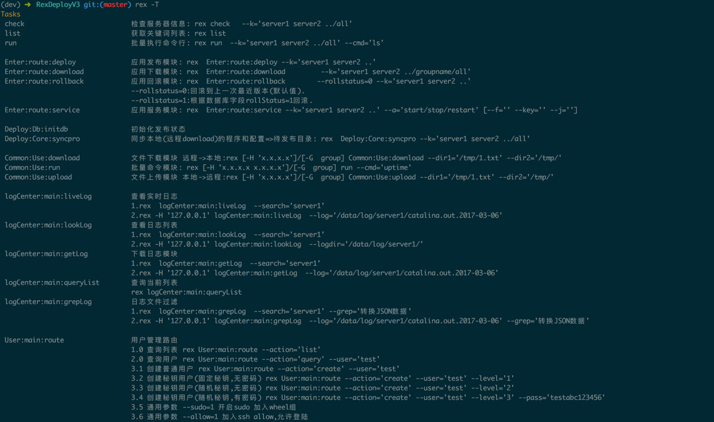

其他操作系统安装
其他操作的安装和Mac版本的安装方式类似
第一步 安装rex依赖
安装rex依赖方法参照官方文档: https://www.rexify.org/get.html
第二步 安装其他相关依赖
cpanm DBI DBD::mysql Mojo::JSON JSON:PP
第三步 初始化模块
# git clone https://gitee.com/lookingdreamer/RexDeployV3.git
# perldoc -l Rex::Commands #查询Rex模块安装路径
/usr/local/Cellar/perl518/5.18.2/lib/site_perl/5.18.2/Rex/Commands.pm
对应Rex模块的路径为 /usr/local/Cellar/perl518/5.18.2/lib/site_perl/5.18.2/Rex
# cd RexDeployV3
# \cp src/Rex/* /usr/local/Cellar/perl518/5.18.2/lib/site_perl/5.18.2/Rex/ -ar
第四步 灌入数据并修改数据库配置文件
文件路径: lib/Deploy/Db/__module__.pm 和 lib/Deploy/Core/__module__.pm
修改之前可以在数据库中创建db: CREATE DATABASE autotask DEFAULT CHARACTER SET utf8 COLLATE utf8_general_ci,灌入数据库sql.数据库文件路径: install/autotask.sql
第五步 验证
初始化配置之后执行 cd RexDeployV3 && rex -T, 看到以下提示，则证明安装已经成功.